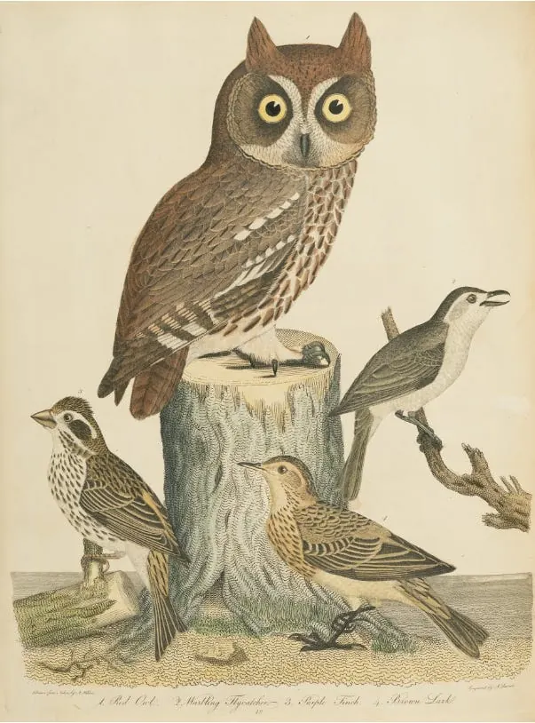
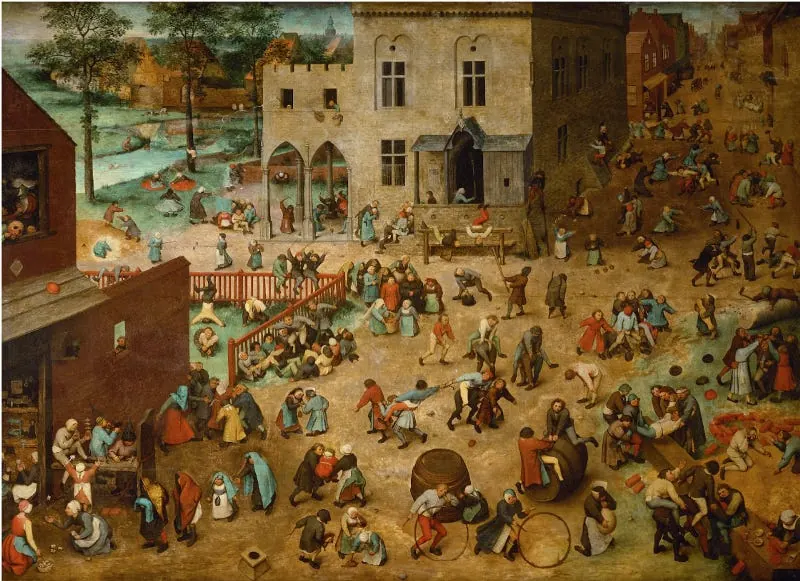

Diario de un Robot · 4 de octubre de 2020October 4, 2020 · Serie: ¿Deberíamos escribir?
¿Cuándo deberíamos escribir?
Ahora. Siempre que encaramos un proyecto creativo empiezan a aparecer excusas. Una vez que sembramos el hábito solo nos queda cosechar.
This essay is only available in Spanish for now.
¿Repasamos el artículo anterior?
En el artículo anterior nos hicimos una pregunta: “¿Deberíamos escribir?” y llegamos a una rápida respuesta. “Sí, deberíamos”. Tenemos las herramientas y las oportunidades, pero, ¿y el tiempo?
¿Cuándo deberíamos escribir?
Ahora.
¿Ahora?
Siempre que encaramos un proyecto creativo empiezan a aparecer excusas. Nuestra cabeza empieza a justificar: “Voy a escribir cuando termine el secundario, la facultad, el máster, el doctorado. Voy a escribir cuando tenga un trabajo de menos horas, los chicos crezcan, llegue la jubilación”. “No tengo tiempo” es una excusa. No estamos buscando cuatro horas, ni siquiera dos. Estamos buscando la consistencia de escribir todos los días. Podemos empezar con un minuto, pero todos los días. La rutina y la persistencia son mejores que el exceso y maratónicas sesiones de escritura. Se llega lejos de a un paso a la vez. Como dice mi madre: “cualquier caracol puede subir el monte Fuji”.
¿Pero no necesitamos algo?
Luego aparece la falacia de la caja de herramientas. Necesito X o Y para lograr Z. Un clásico: “cuando pague la suscripción al gimnasio arranco la rutina”, “cuando tenga estos acrílicos empiezo a pintar”. Este concepto está detallado en el artículo de Ian Martin y va a un punto clave: el pintor pinta, el escritor escribe. Son las acciones las que nos definen, no como nos etiquetamos: ni el imaginario personal ni los cosméticos. Escribimos, el resto es decorado. Si esperamos a que llegue la lapicera ideal, el cuaderno, la computadora, el procesador de texto, el programa, lo que sea: nunca vamos a arrancar. No estamos haciendo más que postergar.
Dos historias icónicas del siglo XX arrancaron en soportes inesperados: “En un agujero en el suelo vivía un hobbit” nació detrás de un examen de literatura inglesa y la franquicia de Harry Potter en una servilleta. No necesitamos nada más.
¿Alondra o búho?

No todos tenemos ritmos de vida idénticos. Hay quienes tienen más energía por la mañana: las alondras. Por otro lado están los búhos: más activos durante la noche. Para averiguarlo solo tenemos que probar. Hay un momento del día en el que estamos más lúcidos y activos. La fisiología no puede ser dejada de lado para entender nuestros procesos mentales. Las variantes en nuestro cronotipo dependen de factores propios de nuestra biología. Luchar contra ello puede hacernos mal y hasta herir nuestra creatividad. Pueden ir acá si quieren seguir leyendo sobre el tema.
Más allá de nuestro biorritmo escribir como primera actividad del día suele funcionar. Permite liberar la cabeza, utilizar sueños e imaginaciones de la noche y encarar el día ya cumplidos. En distintos escritores vemos diferentes rutinas. Nuestro trabajo es encontrar la propia.
¿Cuál es la rutina de un escritor?
Cómo organizar nuestro día es personal. No hay nada mejor que la prueba y error para averiguar la mejor manera. De todas maneras veamos un par de ejemplos. Algunos autores, por ejemplo Haruki Murakami, son conocidos por rutinas particulares e intensas por la mañana:
Cuando estoy en modo escritor de novelas me despierto a las 4:00 y trabajo de cinco a seis horas. A la tarde corro 10 km o nado 1500 m (o ambos), después leo un rato y escucho un poco de música. Me voy a dormir a las 9:00 pm. Esta rutina la mantengo todos los días sin variación. La repetición en sí se convierte en algo importante; es una forma de hipnotismo. Me hipnotizo para llegar a un estado mental más profundo. Pero para mantener esa repetición por tanto tiempo —seis meses a un año— requiere una buena cantidad de fortaleza física y mental. En ese sentido, escribir una novela larga es como entrenamiento de supervivencia. La fortaleza física es tan necesaria como la sensibilidad artística. — “The Running Novelist”, Haruki Murakami (Traducción propia)
Otros, como Brandon Sanderson, utilizan un acercamiento metódico durante las horas de noche. Acá explica cómo un trabajo nocturno durante sus años de universidad le permitió terminar varios de sus libros mientras los demás dormían. Esta rutina la mantiene al día de hoy. Sanderson tiene la amabilidad de dejar sus cursos de libre acceso así que pueden chusmear sus videos y otros recursos.
Hay tantas rutinas como escritores. Un dato curioso es que en mi búsqueda no encontré a ninguno que escriba pasado el mediodía y antes de la tarde. Hay un pozo importante de energía pasado el almuerzo que parece no ser ideal para las actividades creativas.
¿Deberíamos escribir todos los días?
Este es uno de los puntos más engañosos y no voy a dar una recomendación clara. Escribir es difícil y trabajoso, pero puede ser un placer. Para convertirlo en un hábito debemos mantenerlo y lo ideal es hacerlo todos los días. Sin embargo, puede haber complicaciones. Convertir el acto creativo en una tarea fija para muchos puede significar perder el incentivo. El acercamiento metódico puede parecer opuesto al juego de la escritura, pero no tiene por qué serlo. El hábito suele ser apoyado por la mayoría de los autores, entre ellos Aristóteles.
[…] no adquirimos las virtudes sino después de haberlas previamente practicado. Con ellas sucede lo que con todas las demás artes; porque en las cosas que no se pueden hacer sino después de haberlas aprendido, no las aprendemos sino practicándolas; y así uno se hace arquitecto, construyendo; se hace músico, componiendo música. De igual modo se hace uno justo, practicando la justicia; sabio, cultivando la sabiduría; valiente, ejercitando el valor. — Aristóteles, Ética nicomáquea, Libro Segundo, I. Traducción: Patricio de Azcárate. Fuente: acá.
Un punto medio que encontré es mantener la “regla de los dos días” de Matt D’Avella. No dejo pasar más de dos días consecutivos sin escribir. Por ejemplo: lunes (sí), martes (no), miércoles (no), jueves (sí), viernes (no), sábado (no), domingo (sí). De todas maneras recomiendo mantener días y horarios fijos. Esto no solo vale para la escritura: aplica a toda actividad recurrente. Esperar a la creatividad, las musas u otro fenómeno externo puede dejarnos esperando hasta que nos salgan canas. Una vez que sembramos el hábito solo nos queda cosechar.
Es importante tener en cuenta que agotarnos puede ser perjudicial. Quedémonos con esta cita:
“Aprendí a nunca vaciar el aljibe de mi escritura, siempre frenar cuando todavía había algo en su parte más profunda, y dejarlo rellenarse durante la noche por los manantiales que lo alimentan.” ― Ernest Hemingway, A Moveable Feast (Traducción propia, original acá)
¿A qué le tenemos miedo?

En la infancia dibujamos criaturas de lo más aberrantes y sin la menor técnica. Las historias que componemos no tienen un villano desarrollado, están llenas de huecos y les faltan argumentos. Pero lo hacemos. El miedo al error llega con la edad. El sistema educativo tiene fallas estructurales en todos sus niveles, pero quizás la peor cicatriz que nos deja es el miedo a estar equivocados. Según Sir Ken Robinson esto puede matar nuestra creatividad. Los frenos que analizamos antes no son más que la expresión de este miedo. El miedo a fallar.
¿Lo decís en sentido metafórico, no?
No. Escribí ahora.
Seguir leyendo
Un ensayo por semana, en tu mail.One essay a week, in your inbox.
Escribo ficción y ensayo desde 2020. Si te gustó este, el próximo llega a tu casilla.I've been writing fiction and essays since 2020. If you liked this one, the next lands in your inbox.
Si te sirvió, invitame un cafecito.If this was useful, buy me a coffee.
Versión corregida para el sitio.Revised version for the site. Original en SubstackOriginal on Substack, 4 de octubre de 2020October 4, 2020.